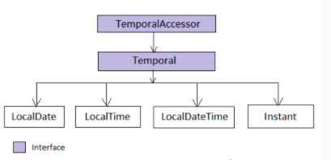

Java时间处理
阅读
发表于：2019年9月10日
Java的时间处理以Java8作为分水岭，可以分为java8之前版本的时间处理方式，主要包括了Date、Calendar、SimpleDateFormat等几个主要的处理类。Java8版本对时间处理进行了革命性的重构，从这个版本之后所有的时间处理类统一放在了java.time包下，由LocalDate、Time、Instant等类处理。
本文主要是对Java的时间处理进行一个回顾总结，介绍java8版本之前的时间处理方式，非官方joda-time类库对java时间处理的增强补充和java8版本之后的时间处理。
前两类时间处理方式，只是作一个简短的回顾，不详细扩展，重点讲解java8之后版本对时间的处理方式。
Java8之前的时间处理
自java.util.Date类从Java 1.0引入后，在java8之前如果需要使用jdk自带的api进行时间操作，这个类会被大量的使用。但这个Date类自从诞生之后，一直被诟病，主要包括了以下问题：
-
命名与实际不一致，该类实际上是一个从1970年的时间偏移量，但从类名上看是某天的一个日期
-
构造函数参数不明确，如想获取一个2019-09-10的日期，我们需要
new Date(119,8,10),年份需要从（2019-1900），月份的起始序号为0 -
不提供国际化，没有时区支持，需要通过引入java.util.TimeZone类
-
可变性，在多线程环境下可变性带来了线程不安全问题。
-
参数范围没有检验。如果构造一个
new Date(119,0,32)，我们希望进行天范围越界异常，但实际你将能获取到2019年2月1日这天
由于Date类的这些问题，Calendar类在java1.1的时候被引入，解决了一些Date类的问题，但初阶效果仍不理想。
- 月份还是以0以起始序号
- 还是可变的，在线程程环境下需要小心处理
- 没有提供快速方便时间计算，如不能方便的计算两个日期的间隔天数
- 引入了java.text.DateFormat ，但该类仍是线程不安全
如下的 DateFormatter代码在多线程环境的执行结果将不可预测
|
|
基于Joda-time类库的时间处理
由于java原生时间处理方式存在的各种问题和操作的复杂性，出现了一批优秀的第三方时间处理类库，joda-time是其中最优秀的时间处理类库之一，在java8之前，大量的涉及时间处理的java项目大量的使用joda-time进行时间的处理。它具有以下优点：
-
线程安全，对象不可变，操作后都会返回新的对象，不像Date是可变的
-
时间和日期的操作更加方法和简单
-
支持ISO8601、Coptic等多种日历系统
-
与JDK百分之百互操作
-
可以完全代替JDK来完成时间和日期的处理
| 类 | 功能 |
|---|---|
| DateTime | 最常用的一个类，可以方便的处理日期和时间 |
| LocalDate | 只包括日期，没有时区 |
| LocalTime | 只包括时间，没有时区 |
| LocalDateTime | 包含日期和时间，但与DateTime不同，只表示的当前系统的时区和默认日历系统 |
| Interval | 处理特定的时间跨度 |
| Duratio | 表示一个精确的时间跨度 |
| DateTimeFormatter | 时间解析和格式化处理类，基于日期与时间字符串之间的转换 |
| DateTimeFormat | DateTimeFormatterr的工厂类，提供各种创建DateTimeFormatter实例方式 |
具体joda-time类库的使用不详细介绍了，它是java8的时间重构提供了一个参数，在java8之后，可以看到 jdk自带的时间处理类很多是joda-time类库中的类名称是完全相同的，所实现的功能也是相同的。
Java8之后的时间处理
JSR310定义了新的日期和时间使用的规范，Java8实现了JSR310的规范，引入了全新的日期和时间处理类库。
在java.time中定义的类将其日历系统基于ISO日历，这是表示日期和时间的世界标准。ISO日历遵循Gregorian规则。公历于1582年推出。
时间的两种表示方法
- 人类时间：比如年、月、日、时、分和秒
- 机器时间：以时间线连续测量时间，从一个称为时代的起点开始，以纳秒为单位
Java8的日期处理包
在Java8中，关于日期的处理类库统一被放在java.time包，及其子包中。
| 包名 | 描述 |
|---|---|
| java.time | 该名下包括日期和时间处理的基础类：Instant, LocalDate, LocalDateTime, LocalTime, ZonedDateTime等，这些类都是不可变和线程安全的，是基于ISO日历系统，遵循Gregorian规则 |
| java.time.temporal | 包括了底层框架和扩展特性 |
| java.time.format | 格式化和解析时间和日期 |
| java.time.chrono | 提供对不同的日历系统的访问 |
| java.time.zone | 包含时区支持的类 |
Java8时间包方法全名约定
java8中定义了大量的方法前缀方法，统一了调用的Api。
| 方法 | 描述 | 例子 |
|---|---|---|
| of | 静态工厂方法，用于通过参数来创建时间日期实例 | LocalDate.of(year,month,day) |
| from | 静态工厂方法，用于通过其它的时间日期实例来创建新的时间日期对象 | LocalDate.from(LocalDateTime.now()) |
| to | 把当前时间日期对象转换成另外一个对象，可能会损失部分状态 | LocalDateTime.toLocalDate()Instant.toEpochMilli() |
| parse | 静态工厂方法，用于通过日期字符串来创建时间日期对象 | LocalDate.parse(“2016-07-12”) |
| get | 获取某些东西的值 | Period.get(ChronoUnit.YEARS) |
| with | 返回一个部分状态改变了的时间日期对象拷贝 | LocalDateTime.now().withYear(2016).withDayOfMonth(20) |
| plus | 返回一个时间增加了的时间日期对象拷贝 | duration.plusHours(5) |
| minus | 返回一个时间减少了的时间日期对象拷贝 | localdate.minusDays(2) |
LocalDate, LocalTime, LocalDateTime, Instant
这四个对象的类图如下

- LocalDate
LocalDate代表年月日的ISO日历，是没有时区的。可以使用LocalDate跟踪重大事件，如出生日期或结婚日期
|
|
- LocalTime
只有时分秒，没有带时区。可以用来表示人的时间（如电影时间）或本地图片馆的开始和结束时间很有用，可以用来创建数字时钟
|
|
- LocalDateTime
无时区的时间类，表示年月日时分秒，是LocalDate和 LocalTime的组合。要以用来表示一个特定的事件。
|
|
Duration, Peroid
- Duration
测量机器时间时，Duration比较合适。
|
|
- ChronoUnit
定义了测量时间的单位。在一个单位内测量一段时间，比如几天或几秒时。可以使用
|
|
- Peroid
Period是返回两个时间间隔的年、月、日等大距离的周期类。
|
|
Formatting, Parsing
用于日期和字符串之间的解析和转换。
DateTimeFormatter类提供了大量的预定义的格式化。
带时区的时间日期
-
ZoneId指定时区标识符并提供Instant和LocalDateTime之间转换的规则
-
ZoneOffset指它格林威治/UTC时间的时区偏移量
-
ZonedDateTime 使用格林威治/ UTC 的时区偏移量处理具有相应时区的日期和时间。
-
OffsetDateTime 使用格林威治/ UTC 的相应时区偏移量处理日期和时间，但不包含时区 ID。
-
OffsetTime 使用格林威治/ UTC 的相应时区偏移量处理时间，但不包含时区 ID。